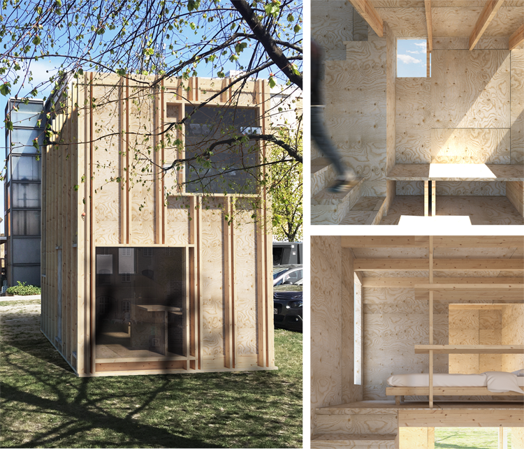

- ABOUT
-
EN TILL EN
The assignment was to make a proposal for a building we as a class would build in full scale.
We worked in groups of two and had a base of 3x6 meters and two floors to work with. The building
should be designed to accommodate two persons, with place for sleeping eating and working.
One of the themes we wanted to explore was movement in a small space. The staircase became
an circulation point the the spaces could branch out from. Ceiling and floor heights rather than
walls was used to separate the space into different zones. This became a way for us to prioritize
functions and show our intent for the use of the house. A centralised movement made it possible to
move to the rooms rather than through them, which allowed us to maximize functionality.
alpha
alpha
alpha
alpha
alpha

alpha

alpha